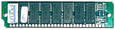
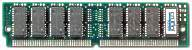
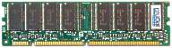
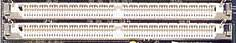
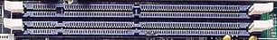
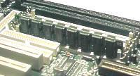
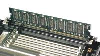

Оперативная
память современного компьютера выполнена
– на микросхемах динамического
типа с произвольной выборкой (DRAM — Dynamic Random Access Memory),
– на микросхемах статического
типа (SRAM — Static RAM).
Различие
между динамической и статической памятью — в способе хранения информации.
В статической памяти данные хранятся вплоть до замены их новым блоком информации.
В качестве элементарной ячейки статической памяти используется статический
триггер. Статическая память обладает высоким быстродействием и используется
для организации кэш-памяти. Динамическая память постоянно опрашивается,
и ее содержание обновляется с частотой циклов регенерации. Она имеет меньшую
скорость работы, но по критерию, учитывающему информационную емкость, стоимость
и энергопотребление, она предпочтительней.
Модули оперативной памяти
Элементы
динамической памяти выполенны в виде модулей SIMM (Single-In-line Memory
Module) и DIMM (Dual-In-line Memory Module). В отличие от SIMM, у модулей
DIMM контакты на противоположных сторонах платы электрически не связаны
между собой, практически вдвое увеличено количество выводов. DIMM — это
двухсторонний модуль.
Виды модулей
памяти:
| 30-контактные (30-pin) SIMM
8-разрядные емкостью 256 Кбайт, 1, 4, 16 Мбайт. Для 32-разрядных процессоров
они устанавливаются на материнскую плату в количестве, кратном 4. |
 |
| 72-контактные (72-pin) SIMM
32-разрядные емкостью 1, 2, 4, 8, 16, 32, 64 Мбайт. В 486 компьютере могут
устанавливаться по одному, в Pentium — кратно 2. |
 |
| 168-контактные (168-pin)
DIMM 64-разрядные емкостью 8, 16, 32, 64, 128, 256 Мбайт. В Pentium устанавливаются
по одному. |
 |
Размещение памяти
Оперативную
память персонального компьютера делят на банки. Банк определяет наименьшее
количество памяти, которое может быть адресовано процессором за один раз
и соответствует разрядности шины данных этого процессора. Для i486 (32-разрядный
процессор) банк состоит из 4 разъемов для 30-контактных SIMM или из одного
разъема для 72-контактного SIMM. Для процессора Pentium (64-разрядный)
банк состоит из 2 разъемов для 72-контактных SIMM или из одного разъема
для DIMM. Заполнение банков всегда начинается с банка 0. Каждый банк должен
быть либо полностью заполненным, либо пустым. В каждом банке используются
элементы одной емкости и быстродействия.
На материнской
плате современного компьютера для установки модулей памяти предусмотрены
специальные разъемы (на рис. их по два):
|
72-pin SIMM Socket
|
DIMM Socket
|
|

|

|
|

|

|
Количество
разъемов того или другого или другого типа зависит от типа материнской
платы, ее производителя.
Все возможные
конфигурации памяти, т.е. тип, емкость, быстродействие и количество элементов,
устанавливаемых на материнской плате, приводятся в документации на материнскую
плату. Размер установленной оперативной памяти BIOS определяет автоматически.